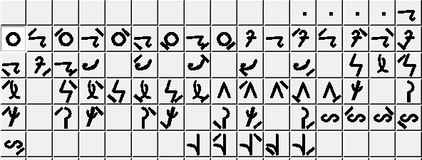
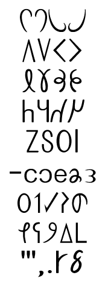
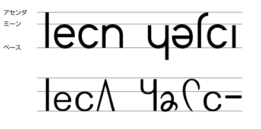
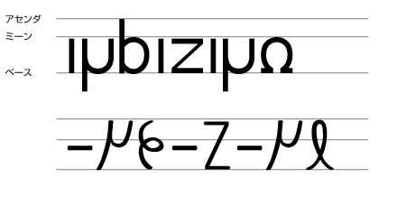
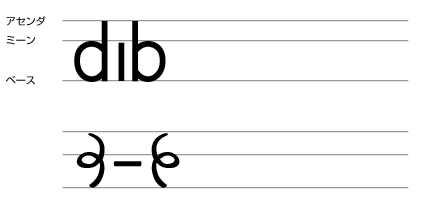

|
History of Lunar Alphabet
Lunar alphabet was made in 2001 from Lunar letter used in Old Arka.
First, a type named "cardiac electrogram" was made. But it was scrapped soon.
Next, a type used in Prototype Established Arka was made.
http://cid-dd6eff55a81cbf67.photos.live.com/self.aspx/arka/kaji.png

Next, Kateej type was made.
http://cid-dd6eff55a81cbf67.photos.live.com/self.aspx/arka/arkantiselen.gif

But Kateej had bad readability, so Arna was made in 2010.
See below. The upper type is Arna. It is more beautiful.
http://cid-dd6eff55a81cbf67.photos.live.com/self.aspx/arka/hacmnod.png

ttp://cid-dd6eff55a81cbf67.photos.live.com/self.aspx/arka/hacmnod2.png

Arna was made to be more beautiful. Compare with "p" and "b" in Kateej.
http://cid-dd6eff55a81cbf67.photos.live.com/self.aspx/arka/hacmnod3.png

Arna was made from Kateej, so it is not Latin alphabet though some of the letter shape are similar to each other.
I mean, "b" in Arna is like "b" in Latin alphabet, but "b" in Arna was made from "b" in Kateej and "b" in Kateej is not similar to "b" in Latin Alphabet. So Arna is an a priori alphabet.
|